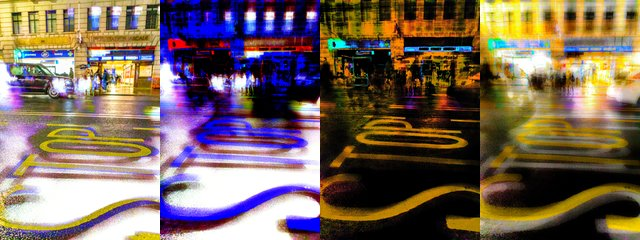

by Hulki Okan Tabak · Async Art Master #3451 · four-phase · time rule: UTC
Updates four times a day to reflect sunrise / day / sunset / night cycles.

Sunrise 06:00–06:59 · Day 07:00–17:59 · Sunset 18:00–18:59 · Night 19:00–05:59 (UTC)
The full-size files live on IPFS; each is linked on three public gateways, in the order to try them (gateway.pinata.cloud, ipfs.io, dweb.link). Every line says what our own check found: 5 we keep this file pinned, 1 our own copy, pinned here and verified on upload.
QmPzErTfYcRPvE… gateway.pinata.cloud · ipfs.io · dweb.link — we keep this file pinned, checked 2026-09-23 09:13QmRep6gPDBEJ6W… gateway.pinata.cloud · ipfs.io · dweb.link — we keep this file pinned, checked 2026-09-23 09:13QmeJACZWyUHtKG… gateway.pinata.cloud · ipfs.io · dweb.link — we keep this file pinned, checked 2026-09-23 09:13QmSnazfEHiJ4a9… gateway.pinata.cloud · ipfs.io · dweb.link — we keep this file pinned, checked 2026-09-23 09:13bafybeial3en7b… gateway.pinata.cloud · ipfs.io · dweb.link — our own copy, pinned here and verified on upload, checked 2026-09-22QmdoTECjTjLeEj… gateway.pinata.cloud · ipfs.io · dweb.link — we keep this file pinned, checked 2026-09-23 09:13QmRep6gPDBEJ6W… gateway.pinata.cloud · ipfs.io · dweb.link — we keep this file pinned, checked 2026-09-23 09:13QmRep6gPDBEJ6W… gateway.pinata.cloud · ipfs.io · dweb.link — we keep this file pinned, checked 2026-09-23 09:13QmSnazfEHiJ4a9… gateway.pinata.cloud · ipfs.io · dweb.link — we keep this file pinned, checked 2026-09-23 09:13QmPzErTfYcRPvE… gateway.pinata.cloud · ipfs.io · dweb.link — we keep this file pinned, checked 2026-09-23 09:13QmeJACZWyUHtKG… gateway.pinata.cloud · ipfs.io · dweb.link — we keep this file pinned, checked 2026-09-23 09:13STOP! by Hulki Okan Tabak 4 piece programmable artwork on Async Art 1/1 minted September 2021 ... Part of a series of Marylebone, London based artworks. All of these works consist of photographs taken by me in January 2020. It is the time of Lunar New Year, Wuhan lockdowns, and the very first signs of the virus in Europe. Marylebone was originally an Ancient Parish formed to serve the manors (landholdings) of Lileston (in the west - which gives its name to modern Lisson Grove) and Tyburn in the east. The parish is likely to have been in place since at least the twelfth century and will have used the boundaries of the pre-existing manors. The boundaries of the parish were consistent from…
async.art · OpenSea · Etherscan
Generated archive pages. Content identifiers point to the public IPFS network.